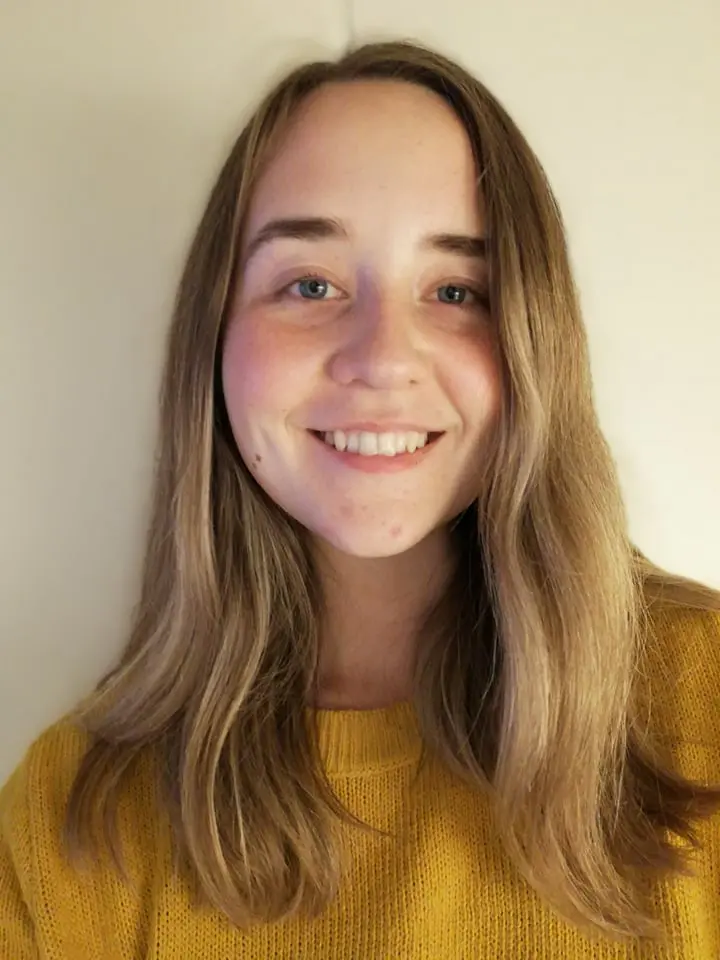

Om Mathea Hansen

Jeg hedder Mathea Hansen. Jeg er 24 år, og kommer oprindeligt fra Bornholm. I sommeren 2021 blev jeg færdig med min bachelor i Engelsk. Dog havde jeg ikke den store interesse i at fortsætte på kandidaten, så jeg søgte mod Multimediedesign. Jeg havde haft valgfaget Digital Design og synes det var super interessant, derfor føltes det oplagt at gå den vej. Jeg kan godt lide at multimediedesign uddannelsen introducerer en for alle mulige former for medie produktion. Jeg synes især at html-kodning er interessant, samt video bearbejdning.
CV
Joberfaring
- Juni-August 2021: Registrant hos Copenhagen Medical
- 2020: Rengøring på Øresundskollegiet
- 2016-2019 (sommersæsoner): Rengøring i ferielejligheder hos Bornholmtours
- 2015 (sommersæson): Tjener hos Hotel Gudhjem
- 2013-2015 (sommersæsoner): Opvasker hos Hotel Gudhjem
Uddannelse
- 2021-: Multimediedesign v. Københavns Erhvervsakademi
- 2018-2021: Bachelor i Engelsk v. Københavns Universitet (Tilvag: Digital Design, Film- og medievidenskab, Programmering og søgemaskiner - til brug ved sprogrelaterede problemstillinger)
- 2017: HGS Bornholm (Kontorretning)
- 2013-2016: Bornholms Gymnasium, STX (Engelsk A, Spansk A, Matematik B, Latin C, Psykologi C)